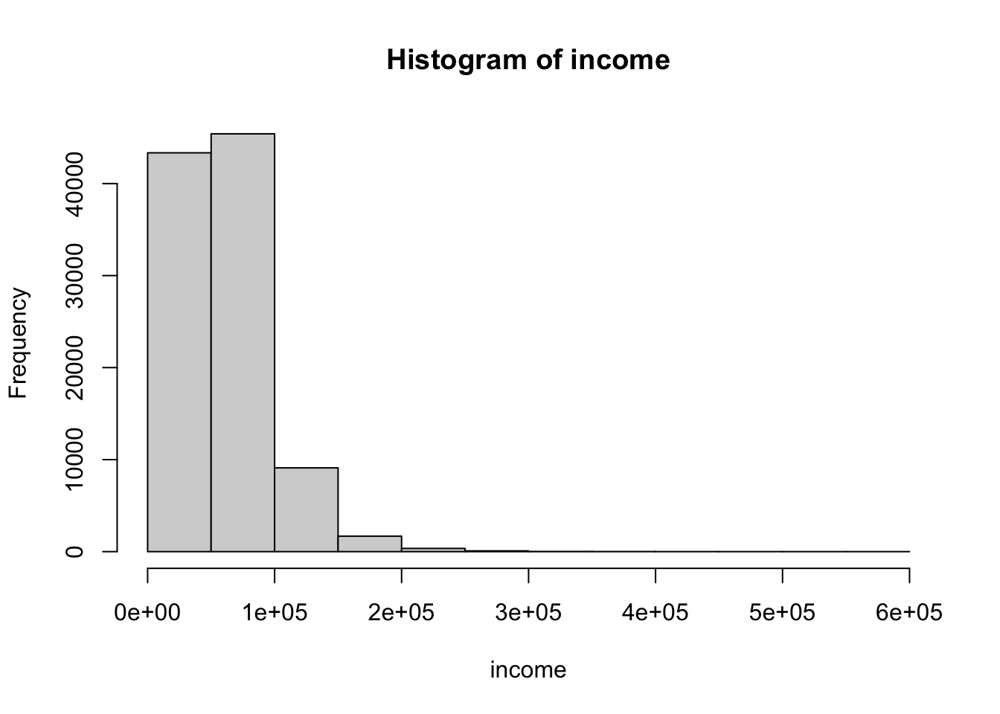
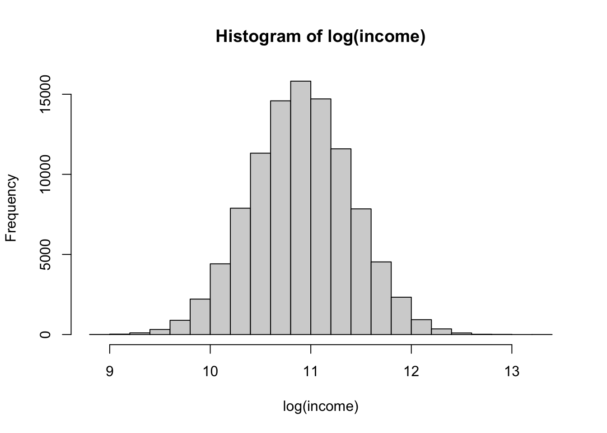

2.4 A simulated DGP
Let’s consider the following DGP solely for the purpose of our understanding.
- College education boosts health by 10 percent.
- Income boosts health by 20 percent.
- 40 percent more people from higher income households have college education.
- Having insurance boosts health by 5 percent.
The DAG representing the DGP is as follows:
# Define a causal diagram
dag <- dagitty("
dag {
college -> health
income -> college
income -> health
ins -> health
}
")
# Visualize the DAG
ggdag(dag) +
theme_minimal() +
ggtitle("Causal Diagram Representing the Made-up DGP.") + theme_void()
# number of observations
n <- 100000
# income follows the log normal distributing
income <- rlnorm(n, meanlog = 1, sdlog = 0.5)
# multiplying the log normal dist with 20000
income <- income * 20000
# a right skewed distribution
hist(income)

# high income
high_income <- ifelse(income > median(income), 1, 0)
# college education
college <- rbinom(n, 1, 0.3 + 0.4 * high_income)
# proportion of college graduates by income status
print(table(college[high_income == 0]))##
## 0 1
## 34927 15073##
## 0 1
## 14935 35065# insurance status
ins <- rbinom(n, 1, 0.5)
# health (good health 1, poor health 0)
# 60 percent of people with no college, low income, and no insurance have good health
# 10 percent more of people with college have good health and so on.
health <- rbinom(n, 1, 0.6 + 0.1 * college + 0.2 * high_income + 0.05 * ins)
table(health)## health
## 0 1
## 22408 77592data <- data.frame(good_health = health, income = income, high_income = high_income, college = college, insurance = ins)
head(data)## good_health income high_income college insurance
## 1 1 88361.61 1 0 1
## 2 0 35076.32 0 1 1
## 3 0 24587.93 0 0 0
## 4 1 44845.39 0 0 1
## 5 1 57014.60 1 0 0
## 6 1 100913.60 1 1 1# building models
reg1 <- lm(good_health ~ college, data = data)
reg2 <- lm(good_health ~ college + income, data = data)
reg3 <- lm(good_health ~ college + high_income, data = data)
reg4 <- lm(good_health ~ college + income + high_income, data = data)
reg5 <- lm(good_health ~ college + high_income + ins, data = data)
summary(reg1)##
## Call:
## lm(formula = good_health ~ college, data = data)
##
## Residuals:
## Min 1Q Median 3Q Max
## -0.8647 0.1353 0.1353 0.3133 0.3133
##
## Coefficients:
## Estimate Std. Error t value Pr(>|t|)
## (Intercept) 0.686675 0.001824 376.40 <2e-16 ***
## college 0.177998 0.002576 69.09 <2e-16 ***
## ---
## Signif. codes: 0 '***' 0.001 '**' 0.01 '*' 0.05 '.' 0.1 ' ' 1
##
## Residual standard error: 0.4074 on 99998 degrees of freedom
## Multiple R-squared: 0.04556, Adjusted R-squared: 0.04555
## F-statistic: 4773 on 1 and 99998 DF, p-value: < 2.2e-16##
## Call:
## lm(formula = good_health ~ college + income, data = data)
##
## Residuals:
## Min 1Q Median 3Q Max
## -1.39433 0.01528 0.15538 0.29044 0.40248
##
## Coefficients:
## Estimate Std. Error t value Pr(>|t|)
## (Intercept) 5.838e-01 2.770e-03 210.75 <2e-16 ***
## college 1.409e-01 2.656e-03 53.06 <2e-16 ***
## income 1.969e-06 4.025e-08 48.92 <2e-16 ***
## ---
## Signif. codes: 0 '***' 0.001 '**' 0.01 '*' 0.05 '.' 0.1 ' ' 1
##
## Residual standard error: 0.4026 on 99997 degrees of freedom
## Multiple R-squared: 0.06787, Adjusted R-squared: 0.06785
## F-statistic: 3640 on 2 and 99997 DF, p-value: < 2.2e-16##
## Call:
## lm(formula = good_health ~ college + high_income, data = data)
##
## Residuals:
## Min 1Q Median 3Q Max
## -0.92351 0.07649 0.07649 0.27221 0.37195
##
## Coefficients:
## Estimate Std. Error t value Pr(>|t|)
## (Intercept) 0.628052 0.001960 320.44 <2e-16 ***
## college 0.099741 0.002742 36.38 <2e-16 ***
## high_income 0.195719 0.002742 71.38 <2e-16 ***
## ---
## Signif. codes: 0 '***' 0.001 '**' 0.01 '*' 0.05 '.' 0.1 ' ' 1
##
## Residual standard error: 0.3974 on 99997 degrees of freedom
## Multiple R-squared: 0.09183, Adjusted R-squared: 0.09181
## F-statistic: 5056 on 2 and 99997 DF, p-value: < 2.2e-16##
## Call:
## lm(formula = good_health ~ college + income + high_income, data = data)
##
## Residuals:
## Min 1Q Median 3Q Max
## -0.93262 0.07469 0.07749 0.27245 0.37317
##
## Coefficients:
## Estimate Std. Error t value Pr(>|t|)
## (Intercept) 6.266e-01 2.858e-03 219.222 <2e-16 ***
## college 9.975e-02 2.742e-03 36.378 <2e-16 ***
## income 3.933e-08 5.467e-08 0.719 0.472
## high_income 1.939e-01 3.774e-03 51.372 <2e-16 ***
## ---
## Signif. codes: 0 '***' 0.001 '**' 0.01 '*' 0.05 '.' 0.1 ' ' 1
##
## Residual standard error: 0.3974 on 99996 degrees of freedom
## Multiple R-squared: 0.09183, Adjusted R-squared: 0.09181
## F-statistic: 3371 on 3 and 99996 DF, p-value: < 2.2e-16##
## Call:
## lm(formula = good_health ~ college + high_income + ins, data = data)
##
## Residuals:
## Min 1Q Median 3Q Max
## -0.94889 0.05111 0.10179 0.29768 0.39760
##
## Coefficients:
## Estimate Std. Error t value Pr(>|t|)
## (Intercept) 0.602399 0.002332 258.34 <2e-16 ***
## college 0.099924 0.002736 36.52 <2e-16 ***
## high_income 0.195884 0.002736 71.58 <2e-16 ***
## ins 0.050686 0.002508 20.21 <2e-16 ***
## ---
## Signif. codes: 0 '***' 0.001 '**' 0.01 '*' 0.05 '.' 0.1 ' ' 1
##
## Residual standard error: 0.3966 on 99996 degrees of freedom
## Multiple R-squared: 0.09552, Adjusted R-squared: 0.0955
## F-statistic: 3520 on 3 and 99996 DF, p-value: < 2.2e-16We know that the treatment effect of interest is 10, i.e., college increase the chances of being in good health by 10 percentage points.
We’ve ran 5 different models (estimated using OLS).
reg1: Misses out on other variables, particularly income. This falsely says that that college education increases the chances of being in better health by 18 pp. We’ve got an omitted variable bias problem here.
reg2: Adds income in a lineary way. This reduced the coefficient on college education; but still its off from the actual effect. Perhaps, its because we linearly control for income?
reg3: Adds in the status of high income (whether income is higher than the median). This is the variable that matters in the DGP. Once we account for income in this way, the coefficient on college education moves to 0.1055 – very close to true effect. One realization is that controling for the variable is not just enough; it is essential to get the correct functional form down as well.
reg4: Uses the specification for reg3, but adds in control for income linearly. Not much changes.
reg5: Adds in control for insurance. Since, insurance acts alone in the DGP, it does not affect the estimate on college education.